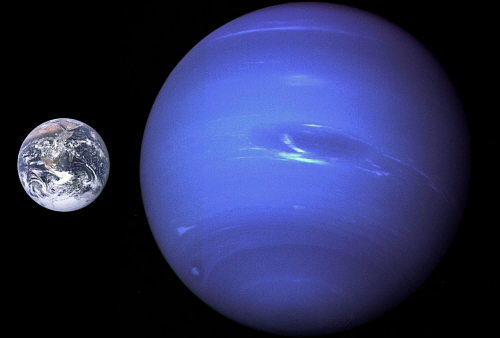
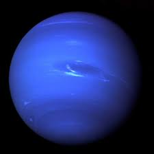

Hace apenas unos años se reclasificó a Plutón como un planeta enano, por lo que Neptuno pasó a ser el último de los planetas gaseosos del Sistema Solar. Es además el planeta más alejado del Sol pues se encuentra a una distancia de éste equivalente a 4,500 millones de kilómetros o 4.5 mil millones de kilómetros. Sin embargo, no es el más frío del sistema planetario. Este puesto lo ocupa Urano.
Fue el primer planeta cuya presencia fue predicha antes que descubierta, cuando en 1845 el matemático Joseph Urbain Le Verrier consideró la posición y masa de otro planeta que afectaría el cambio de posición de Urano. Efectivamente, Johann Gottfried Galle encontró Neptuno en 1846 y 16 días después William Lassell descubrió Tritón, el satélite más grande del recién conocido planeta.
Es el planeta más alejado del Sol y su existencia fue predicha antes que fuera descubierta. Es el tercer planeta más grande en masa. La observación de Neptuno necesita un telescopio o binoculares debido a su lejanía con respecto a la Tierra. Además, es un planeta poco brillante pues como se puede suponer, su brillo no es destacable por encontrarse tan alejado del Sol. El período de rotación sideral corresponde a 16 horas (16.11000 horas) terrestres, que es la duración de 1 día. Realiza una órbita completa alrededor del Sol en 165 años terrestres (1 año de Neptuno). Apenas en 2011 completó la primera órbita desde su descubrimiento en el siglo XIX.
La estructura interna de Neptuno está compuesta mayormente por hielo y roca. Probablemente tiene un núcleo pesado y sólido de tamaño similar al de la Tierra, con temperaturas de miles de grados centígrados. No posee una superficie sólida. Es el más denso de todos los planetas gaseosos pero es menos denso que la Tierra. Su campo magnético es unas 27 veces más potente que el de nuestro planeta.
Neptuno tiene una atmósfera compuesta por un 74 por ciento de hidrógeno, 25 por ciento de helio y 1 por ciento de metano. Su atmósfera se extiende a grandes profundidades y dado su contenido en metano, el planeta es llamado “gigante de hielo”, al igual que Urano. No obstante, el color azulado de Neptuno es aún más intenso y brillante. Es azotado por vientos supersónicos: se estima que son 3 veces más fuertes que los de Júpiter y 9 veces más intensos que los de la Tierra. En 1989 la nave Voyager 2 descubrió una tormenta oscura en el hemisferio sur, denominada la Gran Mancha Oscura, rodeada por un sistema de nubes blancas en movimiento y de dimensiones similares a las de la Tierra. En 1994 los científicos tenían intenciones de fotografiarla, pero se dieron cuenta de que había desaparecido.